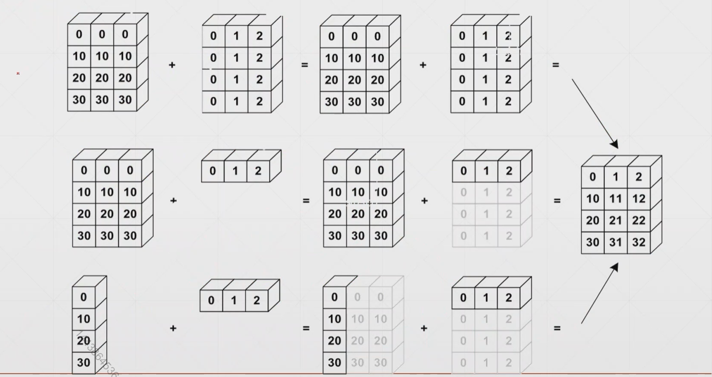
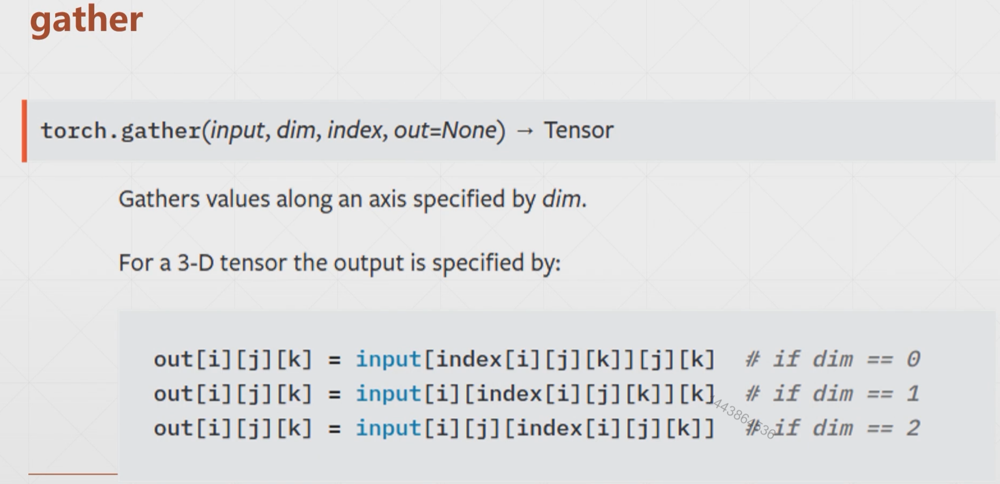

Pytorch进阶
Broadcast自动扩展
- 维度扩展
- 扩展无需复制数据

对于一个shape为torch.size([x1,x2,x3,...,xn])的tensor,靠近 x1那一端为大维度，靠近xn那一端为小维度。那么对于broadcast有：
小维度指定，大维度随意这一规律（因为在大维度上进行广播）
拼接与拆分
catstacksplitchunk
cat
主要的功能是将tensor拼接起来
1 | In [3]: a=torch.rand(4,32,8) |
dim参数表示的是在哪个维度上进行合并。如果是n维tensor则取值范围是 [0,n)
stack
stack的功能和cat有些像，但是他要求的是所拼接的两个tensor的shape必须完全一样。并且拼接后会在拼接维度之前增加一个维度。
注意：shape必须完全一样！
然后在所拼接维度之前会新增加一个维度，用于区分是拼接的哪一块（前一块或后一块）
1 | In [3]: a1=torch.rand(5,3,16,32) |
split
split是按照长度 对tensor进行拆分的函数，一般传入两个参数，第一个参数代表的是所拆维度的长度（长度不仅可以用标量表示固定的长度，也可以用list来表示不固定的长度，详情见下面的例子），第二个参数代表的是所拆的维度是第几维度。
1 | In [3]: c=torch.rand(3,32,8) |
chunck
chunck是按照数量 对tensor进行拆分的函数，一般传入两个参数，第一个参数代表的是所拆维度要拆出来的数量，第二个参数代表的是所拆的维度是第几维度。
1 | In [3]: d=torch.rand(6,32,8) |
数学运算
- 基本四则运算(add/minus/multiply/divide)
- 矩阵乘法(Matmul)
- 乘方运算(Pow)
- 开方运算(Sqrt/rsqrt)
- 近似运算(Round)
基本四则运算
1 | In [3]: a=torch.tensor([[2,4,6],[8,10,12]]) |
pytorch中还专门有定义好的四则运算的函数和以上这些运算符号所运算出来的效果相同，他们分别是。
torch.addtorch.minustorch.multorch.div
1 | In [10]: torch.all(torch.eq(a+b,torch.add(a,b))) |
注意：这里的乘法和除法，不同于矩阵乘法和除法，只是将两个矩阵对应位置的数进行相乘或相除操作。
这里还有一个整除运算符号//没有讲到，好像并没有找到与他对应的函数
矩阵乘法
torch.mm(只适用于二维tensor,不推荐)torch.matmul(适用于任意维度的矩阵)@(同上torch.matmul)
1 | In [3]: a=torch.tensor([[2,4],[8,12]]) |
BP全连接神经网络的一个例子
1 | In [4]: x=torch.rand(4,784) |
高于2维矩阵乘法的原理
取最小两个维度的内容进行矩阵乘法，保留高维度的的大小。其实相当于是支持了多个矩阵并行相乘。
高维度大小不一定要完全一样，但是要符合broadcasting原则，具体见下面的例子
1 | In [3]: a=torch.rand(4,3,28,64) |
乘方运算
.pow()：括号中写次方数**：同上面的pow函数，乘方运算符sqrt()：开平方运算rsqrt()：开平方后求倒数。
1 | In [3]: a=torch.full([2,2],3) |
exp和log和log2和log10
看名字应该就大概明白功能了，这里不再赘述，直接上一个例子吧
1 | In [14]: a=torch.exp(torch.ones(2,2)) |
1 | In [18]: a=torch.ones(2,2)*2 |
近似运算
.floor()：向下取整.ceil()：向上取整.round()：四舍五入.trunc()：裁剪——只保留整数部分/frac()：裁剪——只保留小数部分
1 | In [3]: a=torch.tensor(3.14) |
梯度裁剪※
我们在做和机器学习相关的项目中时，有可能会碰到这种情况，就是梯度太大或太小（接近0）从而导致我们的训练结果并不是非常的理想，因此我们可以采用梯度裁剪的方法，将梯度现有梯度控制在一个范围内，有效避免这类问题。
所使用的函数是clamp，一般传入一个或两个参数。
如果之传入一个参数，该参数表示梯度的最小值，因此比该值小的梯度都会被强行增大到该值。
如果传入两个参数，则两个参数分别表示最小值和最大值，比最小值小的值会强行变为设定的最小值，比最大值大的值会强行变为设定的最大值。
1 | In [3]: grad=torch.rand(2,3)*30-15 |
统计属性
norm：范数mean,sum：平均值，和prod：累乘max,min,argmin,argmax：最大值，最小值，最小值所在位置，最大值所在位置kthvalue,topk：求第k个值，求前k个值
norm
一般是1范数和2范数使用的较多，但下面还是会将各个范数的含义进行简要的介绍。
- 0范数：矩阵中非零元素的个数
- 1范数：矩阵中各个元素的绝对值之和
- 2范数：矩阵中各个元素平方和的1/2次方，又被称为Euclidean范数或者Frobenius 范数。
- p范数：为x向量（或矩阵）各个元素绝对值p次方和的1/p次方。
norm函数一般需要一个或者两个参数，如果只是提供一个参数，则该参数表示的是第几范数，如果提供2个参数，第一个参数意义同上，第二个参数的意义是在哪个维度上进行范数运算。
1 | In [3]: a=torch.tensor([1.,2.,3.,4.,5.,6.,7.,8.]) |
mean,max,min,sum,prod
1 | In [3]: a=torch.arange(8).view(2,4).float() |
可以发现argmax和argmin在寻找最大最小值的时候，是将整个tensor变为了一个一维向量的！如果我们想求每一行的一个最大值或最小值的位置，我们可以采用以下的这种做法。
1 | In [3]: a=torch.randn(4,10) |
dim&keepdim
这两个都是函数中的参数，dim的作用在上面我们已经演示过了，这里就不再赘述。keepdim设置的是返回的答案是否要和原来的矩阵保持相同的维度信息。
1 | In [3]: a=torch.randn(4,10) |
topk,kthvalue
1 | In [3]: a=torch.randn(4,10) |
对于topk函数默认是从大到小 ，如果把largest改为False则是从小到大。kthvalue函数默认是从小到大
比较
-
>,>=,<=,!=,== -
torch.eq(a,b)以上两种都是比较矩阵对应位置的数，因此返回的值是一个同大小的矩阵。
-
torch.equal(a,b)：判断两个矩阵是否完全相等
1 | In [3]: a=torch.randn(4,10) |
高阶操作
wheregather
where
torch.where(condition,x,y)
where函数返回一个tensor，这个tensor中的元素不是从x中选出来的就是从y中选出来的，选择判断条件如下所示：
condition也是一个tensor，和x,y的大小一样。
如果对应位置的conditon值为1，则取x对应位置的数据，否则取y对应位置的数据
1 | In [3]: cond=torch.rand(2,2) |
虽然我们也可以用Python自带的for循环和if语句来实现同样的功能，但是这样的话由于这些语句运行在CPU上，我们不能享受到Pytorch库中带来的GPU加速的优势，因此会运行的更慢一些。
gather
torch.gather(input,dim,index,out=None)
gather函数实现的功能类似于查表函数，给定一个初始表，再给定一个索引表，自动生成一张按照索引表查完初始表的表。

1 | In [3]: prob=torch.randn(4,10) |
总结
以上便是Pytorch中常用的操作了，后续就是实战环节了。
 wechat
wechat alipay
alipay